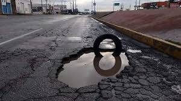
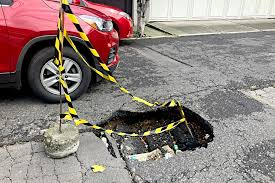
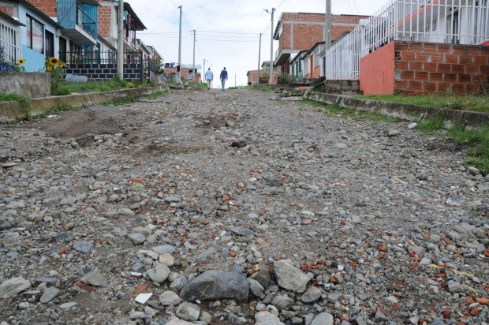
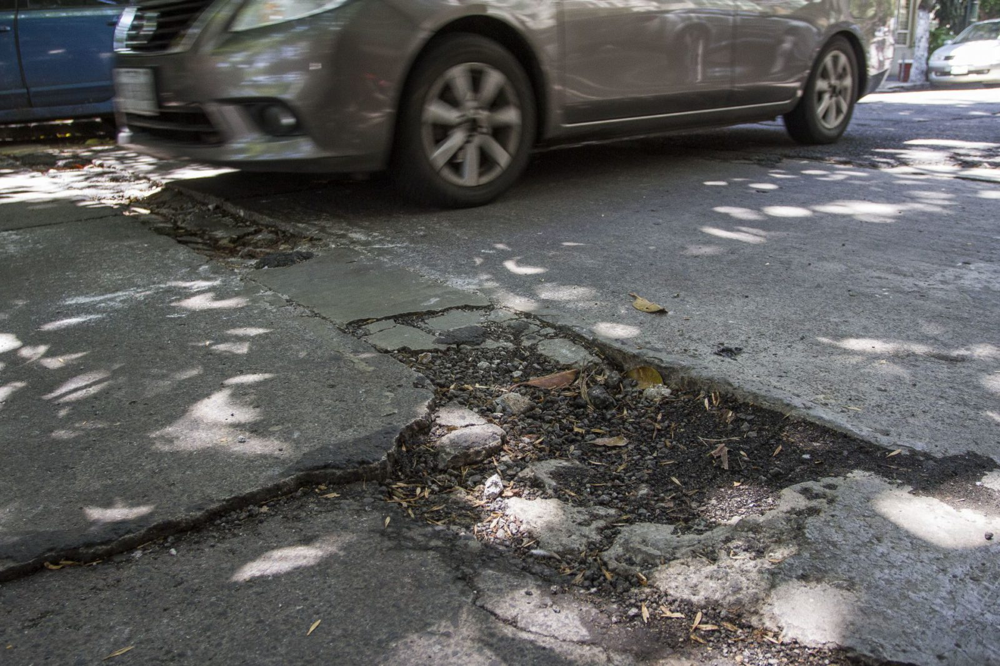

Informes recibidos
Hueco con agua
Hola, quiero reportar un hueco mediano en la calle que está lleno de agua.
Es difícil ver qué tan profundo es y casi caigo en él con mi carro.
Esto puede causar accidentes o daños a los vehículos.
Por favor, revisen esta situación lo antes posible.

Hueco en espera de reparación
Buenas, hay un hueco bastante grande en la vía y está rodeado con cinta de precaución,
pero sigue siendo peligroso para los carros que pasan por ahí.
Sería bueno que lo reparen pronto porque afecta el tránsito y puede causar daños.

Calle sin pavimentar
Quiero reportar que esta calle no está pavimentada y está en muy mal estado,
llena de piedras y huecos. Es difícil transitar por la zona, especialmente cuando llueve.
Sería importante que la pavimenten para mejorar el acceso.

Hueco en zona transitada
Buenas tardes, en esta calle hay un bache bastante grande que está empeorando con el tiempo.
Es una zona muy transitada y los vehículos tienen que esquivarlo constantemente,
lo que puede provocar accidentes o daños.
Por favor, envíen personal para repararlo lo antes posible.
